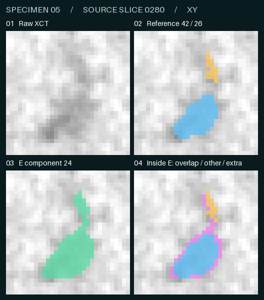

ConeFDK.
在笔记本上，看进一颗核桃
输入是围绕同一颗核桃拍下的 720 幅投影。重建器分批滤波、反投影，再把体数据分块写回磁盘。图中扫层动画取自这次重建，静态图展示三个正交断面。


三项数字，回答三个不同的问题
- 能否复现？
发行包附真实投影小样、命令行程序与校验和，可以先运行小样再下载全量数据。
- 和谁比较？
ASTRA 用于数值对照；速度对照用本工程旧版。两次比较不能互相替代。
- 显存不足怎么办？
另一次 1296³ 实验在 512 MiB 引擎设备缓冲预算下写出 8.71 GB 体数据。该预算不等于进程总显存。
金属里的每一个孔，都能回到原始切片复核吗？
- 先检查测量器
给定 NIST 发布的孔隙掩膜，CUDA 与独立 CPU 程序在三个钴铬试件的指定区域共核对 602 个连通体，孔隙体素计数差为零。这只验证计量，不验证自动找孔。
- 同一个位置，究竟有几个孔？
试件 3 的参考标注里，121 和 127 是两个孔。候选 C 把它们连成一个，体积比 121 号孔大了 47.3%。加入相邻切片后，候选 D 把它们分开，但体积仍分别低估了 6.08% 和 15.625%。
- 什么时候才算通过？
与 NIST 数字参考掩膜比较，预留试件 4、6 必须分别达到全部指标：孔隙率绝对偏差不超过 0.05 个百分点、相对偏差不超过 5%，还要通过重叠度、漏检、体积、等效直径与质心检查。目前三个开发试件都未通过；两个预留试件尚未评分。

两个孔分开了，尺寸还差多少？
参考体积为 296、128 个体素。候选 D 测得 278、108 个。图中四格都是第 455 层同一个 29 × 29 像素区域；颜色标记三维连通体，体积由全部切片计算。
放回整件看：候选 D 在试件 3 匹配到 27 个参考孔中的 25 个，但匹配孔的体积误差 P95 仍有 33.16%，目标为 15%。试件 2 的匹配数则从 71 降到 66。
切片来源：Kim 等 / NIST ↗换一种边界算法，同一个孔测准了吗？
候选 E 按局部纹理选取相似图像块，并在校准时给小孔边界加权。下面逐件比较两种算法：先看全部匹配孔，再看两种算法都找到的同一批孔。验收要求体积绝对相对误差的第 95 百分位（P95）不超过 15%；三个开发试件均未达标。
| 开发试件 | 匹配数（D → E） | 体积误差 P95（D → E） |
|---|---|---|
| 试件 2 | 66 → 67共 73 个参考孔 | 20.68% → 20.97% |
| 试件 3 | 25 → 24共 27 个参考孔 | 33.16% → 28.16% |
| 试件 5 | 10 → 11共 12 个参考孔 | 18.73% → 24.76% |
只比较两种算法都匹配到的孔
| 开发试件 | 共同匹配数 | 体积误差 P95（D → E） |
|---|---|---|
| 试件 2 | 66 个新增 1，丢失 0 | 20.68% → 15.98% |
| 试件 3 | 24 个新增 0，丢失 1 | 33.55% → 28.16% |
| 试件 5 | 10 个新增 1，丢失 0 | 18.73% → 18.61% |
新增和丢失的匹配没有放进这一行的百分位；它们仍计入正式验收的覆盖率。
再回到每件的 24 张校准切片：试件 2、3、5 分别只有 6、1、0 个体积在 64–127 体素之间、且没有被裁切的小孔。试件 5 并非没有孔，而是这段校准图像里没有可完整测量的该尺寸小孔。查看边界放宽、收紧的对照结果 ↗
多看前后两层，能把孔量得更准吗？
在同一段 96 层开发图像中，用前后五层共同预测中心层。试件 2 里两种模型都匹配到的 42 个孔，体积误差 P95 从 14.89% 降至 10.96%；试件 3 从 17.19% 升至 24.02%，试件 5 从 17.01% 升至 21.89%。没有替换正式候选。
回到试件 3 的正式开发区，有 4 个漏配孔的原始灰度对比度达到匹配孔的中位数。与它们重叠最多的预测分别只有 53、60、54、10 个体素，均不到 64 体素的计量下限。
那么，把小预测沿原图暗区扩大会怎样？在迁移区找回了 3 个参考孔，却新增 33 个未匹配预测，其中 23 个最大重叠的参考孔本身就小于计量下限。保留原算法和下限。
再用原始灰度估算体积，23 个本来就小的孔中有 20 个没有被推过线：14 个因裁边或邻孔而弃判，只有 6 个靠估值被筛掉。灰度法保住 2 个原来漏配的孔，与只按原始大小排序打平。在原有匹配孔上移动边界，也只有试件 3 的误差 P95 下降。核对全部估值、弃判和逐孔结果 ↗
知道孔在哪里时，能预测它周围的灰度吗？三件的校准检查都通过了，试件 2 的边界灰度均方根误差从 0.468 降到 0.167。但反过来用灰度同时修改孔边界，迁移区原本分别能匹配的 42、20、9 个孔，一个也没留下。查看完整未匹配对象 ↗
改为只在原边界上分组更新后，三个试件的灰度拟合目标都下降了，分别匹配到 27、9、6 个孔，仍比不修改边界少。该方法不进入正式验收。核对同一批孔的体积误差 ↗
同一批孔换八个方向预测，试件 3 的体积误差 P95 从 19.36% 降到 17.40%，没有达到预定的 2 个百分点。改为学习边界距离，试件 5 从原基线的 17.01% 升到 26.28%。核对八个方向 ↗ · 核对距离对照 ↗
试件 5 的 12 个参考孔，把十二项实验中曾经独立匹配的孔合起来只有 11 个，刚够 90% 覆盖线。即使知道正确答案、为每个孔挑最准确的已有预测，体积误差 P95 仍是 14.61%。没有一种原方法同时达到这两项要求；理想值不是可用算法。查看每个孔的候选体积 ↗
只在七组预测中按区域选一种，5 号实际匹配 9/12 个孔；即使知道参考答案也最多 10/12，低于所需的 11/12。回到原图，3 号有一个 90 体素的孔在七组预测里都连到了超过 113 万体素的触边结构。核对实测与理论上限 ↗ · 定位三个漏配孔 ↗
直接从原图找孔后，5 号找回了此前十二项实验都漏掉的 #62：参考 100 体素，预测 112。3 号匹配到 22/24，但全部匹配孔的体积误差 P95 为 15.58%，仍高于 15%。尝试换用旧方法量边界，5 号的 P95 从 19.31% 降到 16.97%，3 号却变差。查看新增匹配 ↗ · 核对边界交换 ↗
把同一组权重放到各试件另一段不重叠的 96 层，不重新训练：2、3、5 号的逐孔体积误差 P95 分别为 23.82%、25.28%、23.27%，都比原区域高。分数能逐个重算，不代表换个深度仍能量准。核对两个深度的覆盖率与误差 ↗
如果只看去噪后的中心、最低、最高灰度和试件对比度，完全相同的输入有时会得到相反的参考标签。按这些数判定，在 2、3、5 号这三段扫描里分别至少会错 4,004、66,085、22,760 个体素。这个下限不适用于保留完整邻域的算法。查看灰度组合、误差下限和实际漏孔 ↗
沿原始 CT 的 13 个方向比较灰度变化，2、3、5 号分别找到了 46/49、23/24、11/12 个参考孔：每件多找到一个，原有匹配全部保留，预测侧和参考侧的覆盖率也都达到 90%。但体积误差 P95 分别为 22.55%、18.36%、19.64%，三件都比原模型高。查看新增的三个孔和同孔体积对照 ↗
固定这些孔，只在边界上增减一层中的体素，三个试件都没丢匹配。体积估计为什么还是不准？即使知道参考答案，逐孔从合格估计的范围内选最优体积，三件原匹配孔的误差 P95 仍至少为 19.18%、15.30%、16.00%，均高于 15% 验收线。查看范围外的七个孔及实际边界误差 ↗
在原始 CT 的灰度剖面上重新定位边界，前述七个低估孔的体积误差全部降到 15% 以内，包括 2 号一个原来只量到 64 体素的孔（参考 91，这次量到 87）。同一规则用到所有孔，三件体积误差 P95 却分别为 20.85%、38.31%、33.86%，不能作为通用测量方法。核对七个孔及所有匹配结果 ↗
把所有孔的边界都少移一点行不行？在同一批匹配孔上，穷尽所有统一位移比例，即使知道参考体积，三件里最差一件的 P95 最低仍是 19.99%。如果每个孔都能选对原边界或新边界，三件可分别降至 11.39%、12.67%、12.84%。后者用了答案，不是预测精度。核对实测结果和精确枚举 ↗
用别的试件校准，小孔会量得更准吗？
每件另取 96 层作开发实验。先保存三件的原始预测，再用另外两件的完整孔估计边界应移动多少，最后对修正后的掩膜重新测量。下表只比较修正前后都找到的同一批小孔。这项修正没有同时通过三个试件的筛选，保留原算法。
| 目标试件 | 共同小孔 | 体积误差 P95：修正前 → 后 |
|---|---|---|
| 试件 2 | 8 个未通过 | 17.70% → 20.77% |
| 试件 3 | 5 个未通过 | 22.37% → 19.65% |
| 试件 5 | 2 个样本不足 | 19.42% → 20.37% |


离线阅片器能在没有参考标注时提示这种粘连。它在这三段切片中提示了这一个案例；规则是在看到案例后设计的。后面的新切片实验专门检验它是否认错了孔。
这批切片不替代上方正式开发区的评分。离线包能逐层对照原图、数字标注和两种掩膜，也能定位未匹配的预测。查看逐件结果和修正幅度的极限 ↗
换成卷积模型，同一个孔量得更准了吗？
候选 F 在每件原有的 24 张校准切片上训练，再用自写 CUDA 卷积处理正式区域的 128 张切片。试件 3 多找回一个参考孔，但三个试件的逐孔体积误差 P95 仍超过 15%。
| 开发试件 | F 匹配 / 参考 | 体积误差 P95：E → F |
|---|---|---|
| 试件 2 | 69 / 73通过 9 / 11 项 | 20.97% → 23.36% |
| 试件 3 | 25 / 27通过 5 / 11 项 | 28.16% → 27.66% |
| 试件 5 | 11 / 12通过 6 / 11 项 | 24.76% → 32.34% |
新切片推翻了自动拆孔的依据。另取每件的第 552–679 层，先封存预测再核对标注。在试件 2，算法漏掉了一个真正的粘连，却把原本匹配的 904 体素孔拆成 817 和 85 两块；小块没有对应的参考孔。试件 3、5 没有发生拆分。这个规则不进入正式测量。
保留试件 4、6 尚未用于确认。原图切片、逐孔表和失败案例均可离线复核。
先校正灰度，再找孔边界
候选 G 只用每件的 24 张校准切片学习灰度修正，再用固定的局部阈值划出孔。2 号仅差体积误差 P95，3 号却比 F 少匹配了 6 个孔。不能按试件挑表现最好的模型。
| 开发试件 | G 匹配 / 参考 | 体积误差 P95：F → G |
|---|---|---|
| 试件 2 | 69 / 73通过 10 / 11 项 | 23.36% → 17.04% |
| 试件 3 | 19 / 27通过 5 / 11 项 | 27.66% → 43.25% |
| 试件 5 | 10 / 12通过 5 / 11 项 | 32.34% → 23.86% |
从原始灰度和已封存权重重算，三件的 CPU 与 CUDA 在正式区域均给出完全相同的孔掩膜。3 号的量化中间图有 4 处数值不同，最终二值结果没有改变。算法仍未过关，4、6 号继续封存。
把去噪权重拟合得更细，也没有解决误差。2 号在拟合区的 Dice 从 0.91177 升到 0.92562，换到隔开的检查区却从 0.94405 降到 0.93890。三件试件的对照记录 ↗
多认出了孔里的体素，为什么反而漏掉了这个孔？
在另一段 96 层的开发图像上，试件 5 的两种方法都找到了 9 个孔。加入截面面积监督后，这些孔的体积误差 P95 从 20.25% 降至 14.19%。但有一个原来能单独测量的孔，共 452 个体素，其中 415 个被连进一个触及边界的 1,928 体素对象，无法再单独匹配。试件 2、3 的同孔误差也上升，因此没有升级算法。
换成历史 Fiji 插件，在相同去噪图像上的 638,976 个判定与本项目全部一致。再换用论文引用的原版 IPOL 去噪器，三件开发切片的 Dice 都没有提高。
一个孔重新分开了，体积量得有多准？
试件 5 的同一个 452 体素孔，在新的平面对照里与一个触边对象连在一起，共 1,852 体素。给网络加入前后原始切片后，这个孔被单独测为 400 体素，交并比 0.860，体积仍低估 11.50%。
三件开发迁移区的 Dice 都提高了，但只比较两臂都找到的同一批孔，体积误差 P95 在试件 2 降至 17.43%，在试件 3、5 却分别升至 17.64%、22.45%。单纯扩大去噪窗口也没能改善这三件的校准检查结果。
在另一段正式开发区，只允许固定基线改变 ±2 个灰度级时，即使每个体素都选最有利的结果，试件 3 的参考孔匹配数上限也只有 24/27，低于要求的 90%。这是数学上限，不是算法测得的覆盖率。
能在原始扫描中找到论文里的那一层吗？
在试件 2 的 900 张原图中找到了第 447 层。只对齐原图，再用同一映射核对论文的中值图，未参与拟合的右侧相关系数为 0.9871。比较去噪前后的灰度变化，右侧误差从不加去噪的 5.57 降到固定去噪的 4.49；调整参数后为 4.44，仅比固定方法再降 1.08%，没有达到预定的 10%。
另一次训练遍历了全部校准体素。试件 2 的 42 个共同匹配孔，体积误差 P95 从 21.04% 降到 14.89%；试件 3、5 的同孔误差却上升。试件 5 有 406 个属于同一参考孔的体素被连进 1,902 体素的触边对象，不能再单独测量。两项实验都未升级正式候选。
体积误差小了，怎么还会多报三个孔？
在开发迁移区给连接与间隙增加训练权重后，试件 5 的 9 个共同匹配孔，体积误差 P95 从 17.01% 降至 12.42%。但预测中能与参考孔一一配对的比例从 9/11 降到 9/14；试件 3 的同孔误差则从 18.30% 升到 45.92%。因此保留原方法。
对照论文截面的两步灰度变化，把 27 点中值改为 19 点，右区误差从 4.90 升到 4.93；改变去噪补丁内的权重，从 4.44 升到 4.48。后者在三个试件各自的校准检查区也都降低了 Dice。这里没有使用保留试件。
原图对上了，黑白插图就能当孔标签吗？
在试件 2 第 447 层未用于配准拟合的右区，每个原生体素中心只计一次。共 13,464 个中心：论文插图与归档分割的 Dice 为 0.88964，固定算法与同一归档为 0.97889。从原始 TIFF 与 PDF 独立重算，两条路径的分歧计数逐格相同。测量继续以归档为参考。
另在 96 层开发迁移区，把原始灰度按 4×4 网格汇总，让模型看到更远的材料。三个试件匹配到的参考孔 ID 都没变：试件 2 的同孔体积误差 P95 从 14.89% 变为 15.55%，试件 3 从 19.36% 变为 19.31%，试件 5 仍为 17.01%。都没有达到预定的 2 个百分点改善。